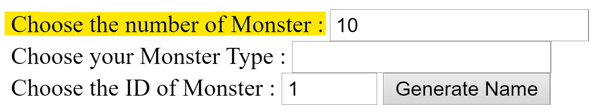
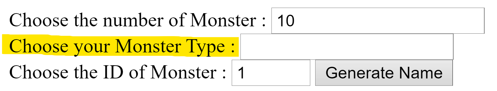
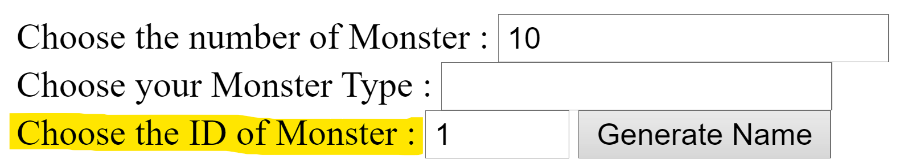
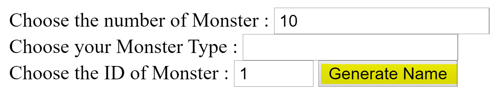
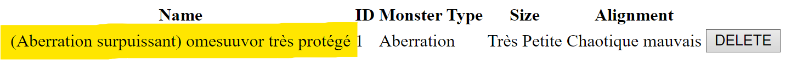
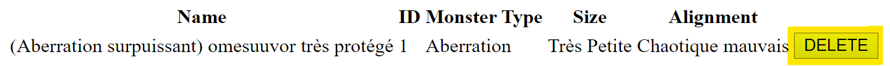

You can choose the number of monsters you want to generate in the input label as "Choose the number of Monster :".
You can choose the type of the monsters you want to generate in the list label as "Choose your Monster Type :".
You can choose the hazard index of the monsters you want to generate in the input label as "Choose the ID of Monster :".
And finally you need to click on the button "GENERATE" to launch the program and generate your monsters.
After that you will see the list of the monsters you have generated with their informations, you can click on the name of the monster to reveal all the data on the monster.
And if you want to delete a monster from the list you can click on the button "DELETE" next to the monster you want to delete.
 Return Home